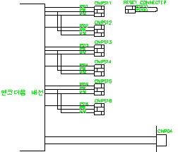
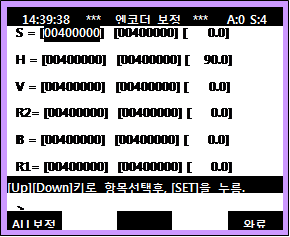

12.1. 개요
제어기 전원 On시에 엔코더에서 받아온 절대치 엔코더 데이터가 엔코더 사용범위 한계를 초과하였습니다. 모터를 새로 장착한 경우에 발생할 수 있는데 로봇을 기준위치에 두고 엔코더 리셋을 실행해야 정상적인 엔코더 사용영역에서 사용할 수 있습니다.
12.2. 원인 및 점검방법
|
1. 엔코더 리셋을 실시합니다. 2. 엔코더 옵셋 설정을 다시 실행하십시오. |
1. 엔코더 리셋을 실시합니다.
엔코더 리셋은 제어기 전원 On 상태에서 각축 엔코더의 RST 단자와 P5E 단자를 3분간 접속시켜서 실시합니다. 로봇 본체 뒤의 cover를 열면 엔코더 리셋용 커넥터와 리셋 전용 커넥터가 준비되어 있습니다.

그림 5.47 엔코더 리셋용 커넥터
2. 엔코더 옵셋 설정을 다시 실행하십시오
엔코더 리셋을 실행시키면 축의 위치를 잃어버리게 됩니다. 로봇을 기준위치로 보내고 엔코더 옵셋 설정을 다시 실행해야 합니다. 로봇 기준위치에서 엔코더 옵셋 설정 직전에 엔코더 리셋을 한번 더 실행해 주는 것이 좋습니다. 로봇에는 축간에 간섭계수가 존재하기 때문에 전축을 기준위치로 보내고 해당축에 대한 옵셋 설정을 해야 합니다.
엔코더 옵셋 설정은 수동모드에서 시스템> 3: 로봇 파라미터> 5: 엔코더 옵셋 설정> 엔코더 보정(위치기록) 을 선택하여 실시합니다.
ALL보정 키를 누르면 한번에 모든 축에 대해 엔코더 옵셋 보정이 실행되므로 주의하시기 바랍니다.
